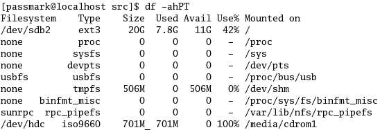
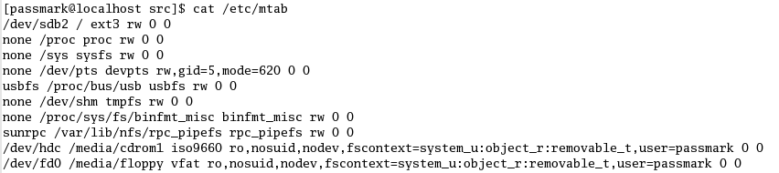

Common Error Messages |
Top Previous Next |
|
When BurnInTest encounters an error during a test run a short description of the error is displayed in the main window. What follows is an explanation of the common errors that may be encountered.
Incorrect mathematical addition / subtraction / division / multiply The execution of a mathematical operation came up with the wrong result (e.g. 1 + 1 = 3). This is a very serious error for a computer as it means the computer is incapable of execution the same sequence of instructions to get the same result. Possible reasons are faulty RAM, System bus, CPU or overheating. There is a strong chance that your computer will crash or lock up just after an error like this because if the computer can’t add two numbers correctly, there is a good chance that it can’t continue to run a program either.
No free memory for buffer Operating system does not have enough free memory to allow the allocation of a buffer.
Not enough free disk space There is not enough free space on the disk to create a test file for the Disk tests.
Test file could not be created BurnInTest was unable to create a file on the disk in order for it to be able to run the disk tests. Check permission access to the disk. Check file write and create permissions in the root directory of the disk under test.
Error while writing to the disk The test file could not be completely written to the disk. This could indicate a hardware error or a sudden lack of free disk space
Error writing to disk - Disk is full The test file could not be completely written to disk because the selected hard drive is full.
Test file could not be re-opened The test file was created successfully, but could not be reopened for verification. This could indicate a hardware error or a resource problem within the operating system.
Error while reading from the disk The test file created on the disk can no longer be read. This could indicate a hardware error or a problem within the operating system.
Data Verify failure This is a serious error that indicates that the data read from the disk is NOT the same as the data that was written to the disk. This could indicate a hardware error.
Disk is full or user file system limit reached A test file could not be created on the disk being tested because the disk is full or the capacity of the file system has been exhausted.
Could not set CD Time format These errors relate to one of the following problems.
Checksum failure for CD/DVD file This indicates that the file read from the data CD/DVD being tested failed the checksum verification. This means that the CD/DVD Drive is unable to accurately read data from the CD/DVD being tested.
Could not open file on CD/DVD for reading The CD/DVD drive selected could not be opened for reading as a data CD/DVD.
Error while reading file from CD/DVD A full block of data could not be read from the data CD/DVD.
Error while searching for files on data CD/DVD An error occurred while searching for files on a data CD/DVD. This can be the result of a corrupted (Error code 1117) or blank CD (Error code 21).
Data read from CD/DVD was incorrect A block read from a specialized PassMark Test CD or DVD was incorrect. There was at least one byte in the block that was not the value expected. In the detailed error log there is additional information that give the number of bytes in error and displays the expected value and the value actual read from the disc. It may be that the drive is faulty but you should check that the disc is not scratched, dusty or damaged before assuming a hardware fault.
Could not determine type of Test CD/DVD BurnInTest was expecting to find a specialized test CD/DVD in the drive selected. A specialized test CD/DVD has a specific set of files, which all have a specific file size. These disc are normally purchased from PassMark Software or made using the PassMark CD-Maker utility. BurnInTest was not able to find the correct files or the files appear to have the wrong file size. If you don’t have a specialized test CD/DVD available, select one of the other two test options in the preferences window.
OpenGL is not installed or is not installed correctly OpenGL is not installed or is not installed correctly on your system.
Error verifying data in RAM The data written to memory is not the same as the information read from memory. This is a very serious error, much like the “Incorrect mathematical…”, error above. It’s highly likely that your computer is about to crash or lock up.
Error allocating RAM The operating system was not able to allocate the amount of RAM requested by BurnInTest for the memory test. As the RAM must be allocated in a continuous block, this error can sometimes be seen as a result of free memory fragmentation.
Error connecting to network During the establishment of a network connection an error was encountered. The Network address selected has no effect on if these errors occur. They can be the result of the following problems: –There is no network connection configured for the computer –The computer is physically disconnected from the network –The Internet TCP/IP protocol is not installed on this computer
Could not allocate memory for packets Operating system is low on resources and cannot allocate any more memory.
Could not resolve host name, check settings The Network address selected does not seem to be correct. Try another address, or using a TCP/IP address directly. The address 127.0.0.1 is good for testing as it is an internal loop back.
Timeout sending packet These errors relate to one of the following problems. The Host using the network address selected doesn’t reply to ‘ping’ messages. Try a different host. There is a configuration problem in your network connection. Your network card may be faulty. The network itself is not reliably. The information send was not the same as the information echoed by the remote host. The network is congested or faulty and the packets are not being echoed within the timeout period specified in the preferences window.
Network test alarm. Error ratio exceeded The Bad Packet ratio specified in the Network test preferences has been exceeded.
Got someone else’s packet This is not really an error. It’s more of an information message. Don’t worry about this message.
Bad packet. Checksum incorrect The checksum in the echoed, incoming data packet is not correct. This indicates data corruption or a fault on the remote machine. Note that this checksum is calculated by the remote machine.
Bad packet. Corrupt data The contents of the incoming data packet are not correct. Normally this error would not been seen as the checksum should detect the incorrect data before this error occurs.
COM port is already in use by another program The serial port selected for the test is already is use by the operating system. This may be for the mouse, a modem or another serial device.
The requested COM port could not be found The serial port selected for the test does not exist in this computer. This could happen if COM4 (ttyS3) is selected but the computer has only 2 serial ports, COM1 (ttyS0) and COM2 (ttyS1).
Error while opening COM port The operating system has reported an error while trying to open the serial port selected for the test. This could be a configuration problem in the operating system. This error should not normally been seen.
Error getting current COM port configuration Error while setting new COM port configuration The operating system has reported an error while trying to configure the selected serial port. The most common cause for this error would be the selection of a speed that is not supported by the serial port chips installed in the computer (the UART). Most chips only support speeds up to 115Kbit/s.
Corruption. Data received didn't match data sent BurnInTest has detected that the data received from the serial port doesn’t match the data sent. This could indicate that there is a hardware problem. This type of data corruption would however be a fairly rare type of event. The more common result of a hardware failure would be the total inability to send or receive data. (see below).
Error while setting current COM port timeouts The operating system has reported an error while trying to set the timeout periods for the data transmission and reception. This could be a configuration problem in the operating system. This error should not normally been seen.
Error while sending data to the COM port Error while receiving from the COM port The operating system has reported an error while trying to send / receive data through the serial port. If a device (such as a loop back plug) is not connected to the serial port then no data can be sent. If the loop back plug is connected and is not faulty, then this error may indicate a hardware fault.
COM port Clear To Send (CTS) line stuck high COM port Clear To Send (CTS) line stuck low COM port Data Set Ready (DSR) line stuck high COM port Data Set Ready (DSR) line stuck low The signal pin test phase of the serial test has failed. This might be because of an incorrectly wired up loop back plug, a cabling problem between the serial socket and the motherboard, a non standard COM port or a problem with the configuration for the COM port. A failure of the CTS pin may be caused by the associated RTS pin, to which it is looped. A failure of the DSR pin may be caused by the associated DTR pin, to which it is looped.
Parallel device driver could not detect port This error usually occurs if the parallel port test attempts to access a parallel port, which doesn’t exist (such as perhaps /dev/lp2 or /dev/lp3). It can also happen if the BIOS settings for the port are not correct. Note that the old ‘bi-directional’ BIOS mode is not supported. ECP or EPP mode is required.
Could not open parallel device driver This error usually occurs if the parallel port test fails to access a parallel port, which does exist.
Corruption. Data received didn't match data sent The data sent to the Parallel port was not the same as the data received. This may indicate a hardware problem or a missing or faulty loop back connector.
Error while sending data to the parallel port Error while receiving data to the parallel port The operating system has reported an error while trying send or receive data. This could be a configuration problem for the parallel port. This error should not normally been seen.
Could not detect the parallel port selected BurnInTest was unable to find a parallel port at the location selected. Try picking another port and see the Parallel port test description (Chapter 3) for more details about port selection
File system not mounted BurnInTest Linux does not perform mounting of drives/partitions. To run Disk Test on a drive/partition, it needs to be mounted. To find out what devices are mounted, use "df -ahPT" on the command line. A sample output is shown below: 
Permission error writing to disk Disk Test attempts to write to and read from the disk's partitions that were configured to run. Hence, we need to have read/write access to these devices' partitions. From the command line, use "cat /etc/mtab" to see what permission you have on these devices. A sample output is shown below: 
It means the device /dev/sdb2 is mounted at "/" with "rw" (read/write permission) and is of file system type ext3. This appear to be our start-up disk and will appear as "Hard Disc (sdb2) [/]" in Disk Test Preferences. /dev/fd0 is mounted at /media/floppy with "ro" (read only permission) and is of file system type "vfat". This appear to be our floppy disk and will appear as "Media (floppy)" in Disk Test Preferences. Hence, if we are trying to run disk test on "Media (floppy)" in this case, we will get this error.
root(admin) access needed to run this test For some tests, BurnInTest needs to be run as a super-user (i.e.system administrator or root user). To log in as a super-user, when the login-manager prompts you for a user name and a password during start-up, you will need to use the user name “root”, followed by an administrator password. The administrator password is set-up during the installation of the operating system.
Alternatively, even if you are logged in as a non-root user from the login-manager, you can still run BurnInTest as a root user process by typing “su” (stands for super-user) at the command line from the terminal shell. You will then be prompted to enter your root password. Type “echo $UID” to see what your user ID is. If it shows 0, it means you are “logged in” as root user in THAT SHELL. If it does not show 0, it means your password is incorrect. Check for “Caps Lock” and “Num Lock” as password is case sensitive. If you are “logged in” as root user in THAT SHELL, you can then run BurnInTest from this shell as a root user.
These tests are Serial Port test, Parallel Port test, Memory (RAM) test and Network test.
|